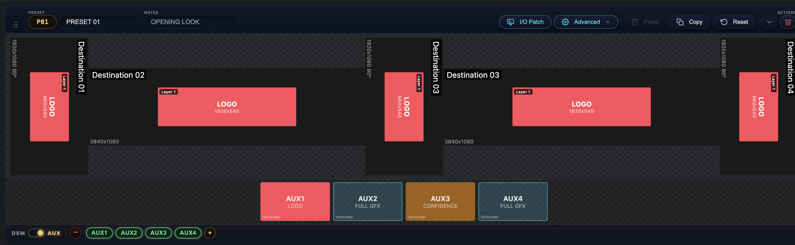
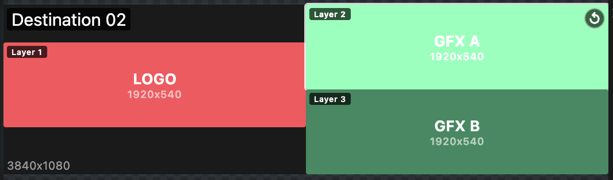
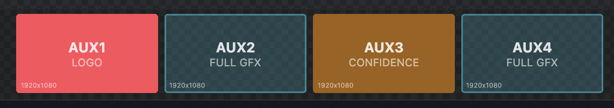

Beta · Private Access
Look Book Builder
A planning tool for show callers and project managers in live events.
Map screen configurations, layer assignments, AUX outputs, and preset combinations for any live event. Build the run-of-show visually, then export as a spreadsheet for your operators or a look book PDF for the client.
Core

3-Tool Workspace
Different planning jobs need different lenses. Mapping signal flow is a different mental model from cueing layers, and cueing layers is different from logging cables.

Presets
Build unlimited preset combinations with per-preset layer and position overrides.

Destinations
Up to 16 layers per destination — most stay simple, complex shots grow as needed.

AUX / DSM
Track auxiliary outputs and downstage monitors with per-preset content.